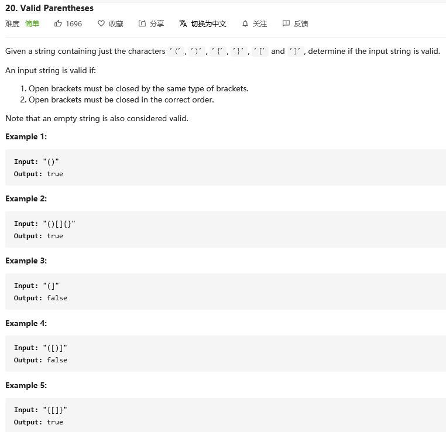
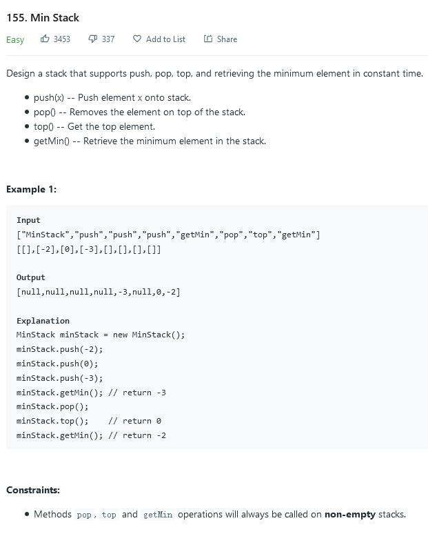
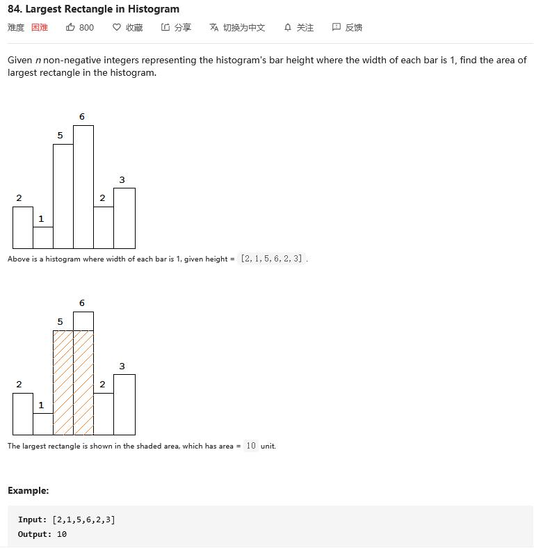

Stack: -class FILO, Add/Delete complexity: O(1), Search: O(N)
Queue: -interface FIFO, Add/Delete complexity: O(1), Search: O(N)
Dequeue: -interfaceSupport both, Add/Delete complexity: O(1), Search: O(N)
PriorityQueue: -interface


